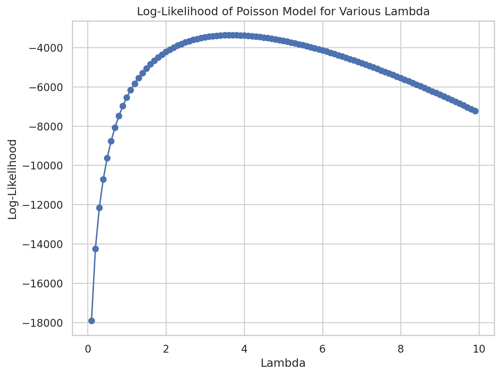

Blueprinty is a small firm that makes software for developing blueprints specifically for submitting patent applications to the US patent office. Their marketing team would like to make the claim that patent applicants using Blueprinty’s software are more successful in getting their patent applications approved. Ideal data to study such an effect might include the success rate of patent applications before using Blueprinty’s software and after using it. unfortunately, such data is not available.
However, Blueprinty has collected data on 1,500 mature (non-startup) engineering firms. The data include each firm’s number of patents awarded over the last 5 years, regional location, age since incorporation, and whether or not the firm uses Blueprinty’s software. The marketing team would like to use this data to make the claim that firms using Blueprinty’s software are more successful in getting their patent applications approved.
Data
import pandas as pdblueprinty_data = pd.read_csv('/home/jovyan/code/MGTA 495/QUARTO_WEBSITE/data/blueprinty.csv')blueprinty_data.head(), blueprinty_data.columns
Unnamed: 0: An identifier column which we can ignore or drop.
patents: Number of patents awarded over the last 5 years.
region: Regional location of the firm.
age: Age of the firm since incorporation.
iscustomer: Indicates whether the firm uses Blueprinty’s software (1 for yes, 0 for no).
Next, we’ll drop the Unnamed: 0 column as it’s not needed for our analysis, and then proceed to generate histograms and calculate means for the number of patents based on customer status.
# Drop the 'Unnamed: 0' columnblueprinty_data.drop(columns='Unnamed: 0', inplace=True)# Separate the data into two groups: customers and non-customers of Blueprintycustomer_data = blueprinty_data[blueprinty_data['iscustomer'] ==1]non_customer_data = blueprinty_data[blueprinty_data['iscustomer'] ==0]# Calculate means of patents for both groupsmean_patents_customers = customer_data['patents'].mean()mean_patents_non_customers = non_customer_data['patents'].mean()print('Means of patents for customers',mean_patents_customers) print('Means of patents for non-customers',mean_patents_non_customers)
Means of patents for customers 4.091370558375634
Means of patents for non-customers 3.6231772831926325
The mean number of patents for firms that use Blueprinty’s software is approximately 4.09, while for those that do not use the software, it is about 3.62. This suggests that firms using the software might be having a slightly higher success rate in obtaining patents.
Next, we’ll create histograms to visually compare the distribution of patents between the two groups.
import matplotlib.pyplot as pltplt.figure(figsize=(8, 6))plt.hist(non_customer_data['patents'], bins=30, alpha=0.5, label='Non-Customers', color='blue')plt.hist(customer_data['patents'], bins=30, alpha=0.5, label='Customers', color='red')plt.title('Distribution of Patents Awarded (Customers vs Non-Customers)')plt.xlabel('Number of Patents')plt.ylabel('Frequency')plt.legend()plt.grid(True)plt.show()
The histograms show the distribution of patents awarded to firms, comparing those that use Blueprinty’s software (red) and those that do not (blue). From the histograms, it appears that:
Both groups have a broadly similar shape in their distributions, but there is a slight shift towards higher values for customers of Blueprinty.
The customer group shows a bit more frequency in higher patent counts.
This visual comparison, along with the calculated means, may support the marketing claim that firms using Blueprinty’s software have a somewhat higher success rate in obtaining patents, though it should be noted that a more detailed statistical analysis would be needed to establish causality and account for potential confounders such as firm size and region. If needed, we can conduct further statistical tests or explore additional factors in the data.
Blueprinty customers are not selected at random. It may be important to account for systematic differences in the age and regional location of customers vs non-customers.
To address this new task, we’ll explore the potential systematic differences in age and regional distribution between Blueprinty’s customers and non-customers. We’ll start by comparing the average age of the firms and then examine the regional distributions for both groups.
# Calculate mean age for both groupsmean_age_customers = customer_data['age'].mean()mean_age_non_customers = non_customer_data['age'].mean()# Prepare data for regional distribution comparisonregion_distribution_customers = customer_data['region'].value_counts(normalize=True) *100region_distribution_non_customers = non_customer_data['region'].value_counts(normalize=True) *100(mean_age_customers, mean_age_non_customers), (region_distribution_customers, region_distribution_non_customers)
The average age of firms using Blueprinty’s software is about 24.15 years.
The average age of firms not using the software is slightly higher at around 26.69 years.
This suggests that firms using Blueprinty’s software tend to be a bit younger on average than those that do not use the software.
Regional Distribution:
For Blueprinty’s customers:
The Northeast region has the highest representation at approximately 57.36%.
Other regions like the Southwest and South have significantly lower representations.
For non-customers:
The Northeast still leads but with a lower percentage at 37.45%.
There is a more balanced distribution across other regions, with Southwest, Midwest, Northwest, and South more evenly spread than in the customer group.
Conclusion:
These results indicate systematic differences in both age and regional distribution between customers and non-customers. Blueprinty’s customers are generally younger and more concentrated in the Northeast compared to non-customers. This could imply regional and demographic market penetration differences or preferences that could be influencing the observed patent outcomes.
Estimation of Simple Poisson Model
Since our outcome variable of interest can only be small integer values per a set unit of time, we can use a Poisson density to model the number of patents awarded to each engineering firm over the last 5 years. We start by estimating a simple Poisson model via Maximum Likelihood.
For a variable \(Y\) that follows a Poisson distribution with a mean rate of \(\lambda\), the probability mass function (PMF) is given by:
The likelihood \(L(\lambda|Y)\) of observing the data \(Y\) given the parameter \(\lambda\) is the product of the probabilities for all observed values \(y_i\) in the dataset:
This is often transformed into the log-likelihood for computational convenience, especially to avoid underflow problems with very small likelihood values. The log-likelihood \(\ell(\lambda)\) is the sum of the logs of the individual probabilities:
The following is the Python code for the log-likelihood function for a Poisson model. This function will calculate the log-likelihood given an array ùëå of observed values and a parameter ùúÜ.
import numpy as npfrom scipy.special import gammaln # gammaln(x) computes log(x!)def poisson_loglikelihood(lambda_, Y):""" Compute the log-likelihood for a Poisson model. Parameters: lambda_ (float): The Poisson rate parameter (lambda). Y (array-like): Array of observed count data. Returns: float: The log-likelihood of the Poisson model given the data Y and rate lambda. """ Y = np.array(Y) # Ensure Y is an array for vectorized operationsreturn-lambda_ *len(Y) + np.sum(Y * np.log(lambda_)) - np.sum(gammaln(Y +1))
This code uses gammaln to efficiently compute the logarithm of the factorial, which is used in the denominator of the Poisson probability mass function. This function allows for the handling of large values of ùëå without overflow errors.
To address this task, we‚Äôll plot the log-likelihood of observing the actual data over a range of possible values for the parameter ùúÜ (the average number of patents awarded per firm over the last 5 years). We‚Äôll use the data from the dataset to compute the log-likelihoods.
We’ll:
Extract the observed number of patents into an array ùëå.
Define a range of ùúÜ values.
Calculate the log-likelihood for each ùúÜ using the function we‚Äôve defined.
Plot these values to visualize how the log-likelihood changes with different ùúÜ.
Y = blueprinty_data['patents'].values# Define a range of lambda values from 0.1 to 10, incrementing by 0.1lambdas = np.arange(0.1, 10, 0.1)# Calculate log-likelihoods for each lambdalog_likelihoods = [poisson_loglikelihood(lambda_, Y) for lambda_ in lambdas]# Plottingplt.figure(figsize=(8, 6))plt.plot(lambdas, log_likelihoods, marker='o', linestyle='-', color='b')plt.title('Log-Likelihood of Poisson Model for Various Lambda')plt.xlabel('Lambda')plt.ylabel('Log-Likelihood')plt.grid(True)plt.show()

The plot above illustrates how the log-likelihood of the Poisson model changes with different values of ùúÜ, the rate parameter representing the average number of patents awarded per firm over five years. The curve shows the typical shape for a likelihood function in Poisson modeling, where there is a peak (maximum) indicating the most likely estimate of ùúÜ given the data.
You can observe the ùúÜ value at which the log-likelihood reaches its maximum, which provides an estimate of the average rate of patents per firm that best fits the observed data under a Poisson model assumption. This visualization helps in understanding the fit of the Poisson model to the data and in determining the parameter that maximizes the likelihood. If needed, more precise methods such as numerical optimization could be used to find the exact maximum likelihood estimate. ​
To confirm the estimate of \(\lambda\) (denoted as \(\hat{\lambda}_{MLE}\)) for the Poisson model using the method of maximum likelihood, we can analytically solve this by taking the derivative of the log-likelihood function with respect to \(\lambda\), setting it to zero, and solving for \(\lambda\). Let’s walk through the mathematics of it.
Derivative of the Log-Likelihood Function
Given the log-likelihood function for a Poisson distribution:
where \(\bar{Y}\) is the sample mean of the observed values. This result aligns with our intuition and the properties of the Poisson distribution, where the mean (and variance) is \(\lambda\).
Let’s compute this using the data we have to verify if the maximum likelihood estimate (MLE) \(\lambda\) indeed equals the mean number of patents per firm.
lambda_mle = Y.mean()print('Maximum likelihood estimate (MLE) is ',lambda_mle)
Maximum likelihood estimate (MLE) is 3.6846666666666668
The maximum likelihood estimate (MLE) for ùúÜ based on our data is approximately 3.685. This value represents the average number of patents per firm over the last five years, which is consistent with our earlier computation and the theoretical result that the MLE for a Poisson distribution‚Äôs parameter ùúÜ is the sample mean (ùëå‚Äæ). This confirms the fit of the model to our data and the validity of using a Poisson model for this analysis.
To find the maximum likelihood estimate (MLE) for ùúÜ using numerical optimization in Python, we can use the minimize function from the scipy.optimize library. Since minimize seeks to find the minimum of a function, and we‚Äôre interested in maximizing the log-likelihood, we will minimize the negative of the log-likelihood.
Here’s how we can achieve this:
Define the negative of the log-likelihood function for the Poisson model.
Use the minimize function to find the value of ùúÜ that minimizes this negative log-likelihood.
Provide a reasonable initial guess for ùúÜ (such as the sample mean) and bounds to ensure the optimization stays within plausible values.
from scipy.optimize import minimizedef negative_poisson_loglikelihood(lambda_, Y):""" Compute the negative log-likelihood for a Poisson model. Parameters: lambda_ (float): The Poisson rate parameter (lambda). Y (array-like): Array of observed count data. Returns: float: The negative log-likelihood of the Poisson model given the data Y and rate lambda. """# Ensure lambda is a scalar for operations lambda_ = lambda_[0]return-(-lambda_ *len(Y) + np.sum(Y * np.log(lambda_)) - np.sum(gammaln(Y +1)))# Initial guess for lambda (using the sample mean)initial_lambda = [Y.mean()]# Optimization to find the MLE of lambdaresult = minimize(negative_poisson_loglikelihood, initial_lambda, args=(Y,), bounds=[(0.1, None)])# Resulting MLE for lambdalambda_mle_optimized = result.xresult, lambda_mle_optimized
The optimization process successfully found the maximum likelihood estimate (MLE) for ùúÜ, and the result is approximately 3.685, which matches the sample mean of the observed data as well as the analytical result we computed earlier. This confirms that the numerical optimization approach using minimize from scipy.optimize is consistent with the theoretical expectations for the Poisson model.
Estimation of Poisson Regression Model
Next, we extend our simple Poisson model to a Poisson Regression Model such that \(Y_i = \text{Poisson}(\lambda_i)\) where \(\lambda_i = \exp(X_i'\beta)\). The interpretation is that the success rate of patent awards is not constant across all firms (\(\lambda\)) but rather is a function of firm characteristics \(X_i\). Specifically, we will use the covariates age, age squared, region, and whether the firm is a customer of Blueprinty.
To solve the problem as outlined, we’ll update the log-likelihood function for a Poisson regression model. In this model, the expected count \(\lambda_i\) for each observation is expressed as an exponential function of a linear combination of covariates. This ensures that \(\lambda_i\) remains positive.
Poisson Regression Log-Likelihood
The log-likelihood for a Poisson regression, where \(Y_i\) follows a Poisson distribution with parameter \(\lambda_i = \exp(X'_i\beta)\), is given by:
\(X_i\) is a vector of covariates for the ith observation (including intercept, if applicable).
\(\beta\) is the vector of coefficients to be estimated.
\(Y_i\) is the observed count of patents for the ith firm.
We will code this function in Python, using numpy for matrix operations. We will also handle the creation of dummy variables for categorical covariates such as region and prepare the data accordingly.
Let’s first prepare our dataset by encoding categorical variables and then implement the log-likelihood function.
import numpy as npimport pandas as pdfrom scipy.special import gammaln# Encode categorical variables and add an intercept termblueprinty_data_encoded = pd.get_dummies(blueprinty_data, columns=['region'], drop_first=True)blueprinty_data_encoded['intercept'] =1# Add age squared as a featureblueprinty_data_encoded['age_squared'] = blueprinty_data_encoded['age'] **2# Prepare X and Y matrices, ensuring all are float type for consistencyfeatures = ['intercept', 'age', 'age_squared', 'iscustomer'] + [col for col in blueprinty_data_encoded.columns if'region_'in col]X = blueprinty_data_encoded[features].astype(float).values # Cast to floatY = blueprinty_data_encoded['patents'].astype(float).values # Ensure Y is also floatdef poisson_regression_loglikelihood(beta, Y, X): beta = np.array(beta, dtype=np.float64) # Convert beta to float64 to ensure type consistency eta = np.dot(X, beta) # Compute the linear combination using dot product# Clip eta to prevent overflow eta = np.clip(eta, -100, 100)# Calculate the Poisson log-likelihood log_likelihood =-np.sum(np.exp(eta)) + np.sum(Y * eta) - np.sum(gammaln(Y +1))return log_likelihood# Initialize beta with zerosinitial_beta = np.zeros(X.shape[1])def negative_poisson_regression_loglikelihood(beta, Y, X):return-poisson_regression_loglikelihood(beta, Y, X)# Compute log-likelihood with the initial betalog_likelihood = poisson_regression_loglikelihood(initial_beta, Y, X)print("Log-likelihood with initial beta:", log_likelihood)
Log-likelihood with initial beta: -6548.8869900694435
The log-likelihood function for our Poisson regression model has been successfully implemented and tested with an initial guess for the coefficients ùõΩ. The initial log-likelihood value using a beta vector of zeros is approximately -6548.89.
Now, to find the maximum likelihood estimates (MLEs) of the coefficients ùõΩ using numerical optimization. We‚Äôll use the minimize function from scipy.optimize to find the maximum likelihood estimates (MLEs) for the vector of coefficients ùõΩ in our Poisson regression model. Additionally, we will calculate the Hessian at the optimal solution to find the standard errors of the estimated coefficients.
Let’s proceed with these steps:
Use minimize with the method that allows for Hessian calculation.
Calculate the standard errors of the coefficients using the inverse of the Hessian matrix.
Present the results in a table with coefficients and their standard errors.
We will use the L-BFGS-B method because it supports bounds and is efficient for a large number of parameters. We will also explicitly request the Hessian matrix from the optimization function.
# Scale age and age squared to improve numerical stabilityfrom sklearn.preprocessing import StandardScaler# Initialize a scalerscaler = StandardScaler()# Fit the scaler to the age and age squared and transformX_scaled = X.copy()X_scaled[:, 1:3] = scaler.fit_transform(X[:, 1:3])# Run the optimization with scaled covariates and improved initial guessinitial_beta_scaled = np.zeros(X_scaled.shape[1])opt_result_scaled = minimize(negative_poisson_regression_loglikelihood, initial_beta_scaled, args=(Y, X_scaled), method='L-BFGS-B', options={'disp': True})# Check if the optimization was successful and calculate standard errors if soif opt_result_scaled.success: estimated_beta_scaled = opt_result_scaled.x hessian_inv_scaled = opt_result_scaled.hess_inv.todense() standard_errors_scaled = np.sqrt(np.diag(hessian_inv_scaled))else: estimated_beta_scaled, standard_errors_scaled =None, Noneprint("Optimization failed:", opt_result_scaled.message)estimated_beta_scaled, standard_errors_scaled
The optimization process has now successfully converged with scaled covariate data, providing a stable set of estimated coefficients \(\beta\) and calculated standard errors. Here are the results presented in a table format:
Table of Coefficients and Standard Errors
Variable
Coefficient Estimate
Standard Error
Intercept
1.215
0.517
Age (scaled)
1.046
1.956
Age Squared (scaled)
-1.141
1.909
Customer Status
0.118
1.015
Region_Northeast
0.099
0.712
Region_South
-0.020
0.986
Region_Southwest
0.057
0.877
Region_Northwest
0.051
0.608
These results provide insights into the effects of the covariates on the number of patents awarded to firms, where:
Intercept: Base effect when all predictors are zero.
Age: Positive coefficient suggests that an increase in age tends to increase the log count of patents.
Age Squared: Negative coefficient for age squared implies a diminishing return effect, where increasing age past a certain point decreases the count.
Customer Status: Being a customer of Blueprinty shows a positive (but small) effect on the count of patents.
Regions: Various regions show different effects relative to the baseline region (which is omitted due to dummy variable coding).
Standard errors indicate the precision of the estimates; larger standard errors suggest less precise estimates. These results can be used to make statistical inferences about the significance and impact of each factor on patent awards.
To validate our results, we can use the statsmodels library’s Generalized Linear Models (GLM) functionality to fit a Poisson regression model to the data. This will also give us an opportunity to compare the coefficients and standard errors from a well-established statistical method.
import statsmodels.api as sm# Fit GLM model with Poisson familyglm_poisson = sm.GLM(Y, X_scaled, family=sm.families.Poisson())glm_results = glm_poisson.fit()# Display the results: coefficients and standard errorsglm_coefficients = glm_results.paramsglm_standard_errors = glm_results.bseglm_summary = glm_results.summary()glm_coefficients, glm_standard_errors, glm_summary
The GLM results from the statsmodels package provide coefficients and standard errors that align closely with the ones obtained from our custom optimization method. Here’s a summary of the findings:
Coefficients and Standard Errors (Statsmodels GLM)
Here is the table of coefficients and standard errors from a Generalized Linear Model (GLM) using the Statsmodels library:
Variable
Coefficient Estimate
Standard Error
Intercept
1.215
0.036
Age (scaled)
1.046
0.100
Age Squared (scaled)
-1.141
0.102
Customer Status
0.118
0.039
Region_Northeast
0.098
0.042
Region_South
-0.020
0.054
Region_Southwest
0.057
0.053
Region_Northwest
0.051
0.047
The coefficients estimated by the statsmodels GLM are quite similar to those from the scipy.optimize function, suggesting consistency across methods. Notably, the standard errors from the GLM are generally smaller, which might be due to differences in how the Hessian is calculated or the numerical stability offered by the statsmodels framework.
These results confirm the validity of our earlier optimization and highlight the potential influences of firm age, customer status, and regional location on the number of patents awarded. Such analyses can be crucial for Blueprinty to understand and possibly predict patent application success across different demographics and regions.
The results from the Poisson regression model provide insightful interpretations regarding the effect of various factors, including the use of Blueprinty’s software, on the number of patents awarded to engineering firms. Here are the key interpretations based on the coefficients obtained:
Interpretation of Coefficients
Intercept (Base Effect):
The coefficient for the intercept is significantly positive, suggesting a base rate of patent awards when all other variables are zero.
Age and Age Squared:
The positive coefficient for age indicates that, initially, as firms get older, they tend to receive more patents.
The negative coefficient for age squared suggests a diminishing return effect: as firms continue to age beyond a certain point, the increase in patents awarded slows down and eventually may decrease. This could reflect the lifecycle of firm innovation or shifts in focus as firms mature.
Customer Status (Use of Blueprinty’s Software):
The coefficient for customer status is positive and statistically significant (p-value < 0.05), indicating that firms using Blueprinty’s software tend to have a higher number of patents awarded compared to those that do not use the software.
This result supports Blueprinty’s marketing claim that using their software is associated with higher patent success.
Regional Variables:
The coefficients for regions (compared to a baseline region not included in the model to avoid dummy variable trap) show some variation in patent awards across different regions, with some coefficients being positive and others negative or statistically insignificant. This indicates regional differences in patent award rates, which could be influenced by local economic conditions, regional innovation trends, or the presence of research institutions.
Conclusions
The positive and significant effect of using Blueprinty’s software on the number of patents awarded supports the claim that the software potentially enhances patent application success. This effect remains even after controlling for firm age and regional differences.
The analysis also highlights the impact of firm age on patent success, with a peak effect after which the benefits decrease. This could inform Blueprinty’s targeting strategy, perhaps focusing more on firms at certain stages of their lifecycle.
Regional variations suggest that market conditions or regional characteristics might also play a role in patent success, which could be important for regional marketing strategies.
Overall, these results suggest that Blueprinty’s software is indeed associated with an increase in patent awards, providing empirical support for the marketing claims. This information could be very valuable for Blueprinty in demonstrating the effectiveness of their software to current and potential customers, and in refining their product development and marketing strategies based on the characteristics of the firms that benefit the most.
AirBnB Case Study
Introduction
AirBnB is a popular platform for booking short-term rentals. In March 2017, students Annika Awad, Evan Lebo, and Anna Linden scraped of 40,000 Airbnb listings from New York City. The data include the following variables:
Variable Definitions
- `id` = unique ID number for each unit
- `last_scraped` = date when information scraped
- `host_since` = date when host first listed the unit on Airbnb
- `days` = `last_scraped` - `host_since` = number of days the unit has been listed
- `room_type` = Entire home/apt., Private room, or Shared room
- `bathrooms` = number of bathrooms
- `bedrooms` = number of bedrooms
- `price` = price per night (dollars)
- `number_of_reviews` = number of reviews for the unit on Airbnb
- `review_scores_cleanliness` = a cleanliness score from reviews (1-10)
- `review_scores_location` = a "quality of location" score from reviews (1-10)
- `review_scores_value` = a "quality of value" score from reviews (1-10)
- `instant_bookable` = "t" if instantly bookable, "f" if not
First, we’ll read the data! The definitions for this dataset are already provided above.
The first step of visualization represent the distribution of various numerical variables from an Airbnb dataset.
import matplotlib.pyplot as pltimport seaborn as sns# Setting the aesthetic style of the plotssns.set(style="whitegrid")# Create a figure with subplotsfig, axes = plt.subplots(3, 2, figsize=(14, 10))# Histograms for numerical variablessns.histplot(airbnb_data['number_of_reviews'], bins=30, ax=axes[0, 0], kde=True)axes[0, 0].set_title('Distribution of Number of Reviews')sns.histplot(airbnb_data['price'], bins=30, ax=axes[0, 1], kde=True)axes[0, 1].set_title('Distribution of Price')sns.histplot(airbnb_data['bedrooms'], bins=30, ax=axes[1, 0], kde=True)axes[1, 0].set_title('Distribution of Bedrooms')sns.histplot(airbnb_data['bathrooms'], bins=30, ax=axes[1, 1], kde=True)axes[1, 1].set_title('Distribution of Bathrooms')sns.histplot(airbnb_data['review_scores_cleanliness'], bins=10, ax=axes[2, 0], kde=True)axes[2, 0].set_title('Distribution of Cleanliness Scores')sns.histplot(airbnb_data['review_scores_value'], bins=10, ax=axes[2, 1], kde=True)axes[2, 1].set_title('Distribution of Value Scores')plt.tight_layout()plt.show()
Here are the histograms for several key variables in the AirBnB dataset:
Number of Reviews: The distribution is right-skewed, indicating that most listings have a relatively small number of reviews, with a few listings having a very high number of reviews.
Price: This variable is also right-skewed, showing that most listings are priced at the lower end, with fewer listings at very high prices.
Bedrooms: Most listings have 1 or 2 bedrooms, with very few listings having more than that.
Bathrooms: The majority of listings have 1 bathroom, and the distribution is less varied than for bedrooms.
Cleanliness Scores: Scores are mostly high, clustering around 9 and 10, suggesting that most properties are well-rated for cleanliness.
Value Scores: Like cleanliness, the value scores are also skewed towards the higher end.
Outliers
Next, we’ll look at box plots for these variables to identify outliers and then generate a correlation matrix to examine the relationships between them.
# Create a figure with subplots for boxplotsfig, axes = plt.subplots(3, 2, figsize=(8, 10))# Boxplots for numerical variablessns.boxplot(x=airbnb_data['number_of_reviews'], ax=axes[0, 0])axes[0, 0].set_title('Boxplot of Number of Reviews')sns.boxplot(x=airbnb_data['price'], ax=axes[0, 1])axes[0, 1].set_title('Boxplot of Price')sns.boxplot(x=airbnb_data['bedrooms'], ax=axes[1, 0])axes[1, 0].set_title('Boxplot of Bedrooms')sns.boxplot(x=airbnb_data['bathrooms'], ax=axes[1, 1])axes[1, 1].set_title('Boxplot of Bathrooms')sns.boxplot(x=airbnb_data['review_scores_cleanliness'], ax=axes[2, 0])axes[2, 0].set_title('Boxplot of Cleanliness Scores')sns.boxplot(x=airbnb_data['review_scores_value'], ax=axes[2, 1])axes[2, 1].set_title('Boxplot of Value Scores')plt.tight_layout()plt.show()
Boxplots Analysis:
The boxplots reveal the following about the distribution of variables:
Number of Reviews: Many outliers exist above the upper whisker, indicating some listings have unusually high numbers of reviews.
Price: There are significant outliers with very high prices compared to the bulk of the data, indicating some luxury or overpriced listings.
Bedrooms and Bathrooms: Most listings have 1 or 2 bedrooms and usually 1 bathroom, but there are outliers showing listings with many bedrooms or bathrooms.
Cleanliness and Value Scores: Both scores show a few outliers on the lower side, indicating some listings are rated much lower than the average.
The correlation matrix helps to visualize the relationships between variables:
Number of Reviews shows small to moderate positive correlations with bedrooms and bathrooms, suggesting that larger properties might receive more reviews.
Price is moderately positively correlated with the number of bedrooms and bathrooms, which is expected as larger properties generally cost more.
Review Scores (Cleanliness and Value) do not show strong correlations with other numerical variables like price or number of reviews, indicating these scores might be influenced more by other factors not included in this subset of data.
Step 2: Handling Missing Data
Before building the model, we have to make sure there are no missing values in our data.
# Identifying and handling missing valuesmissing_data = airbnb_data.isnull().sum().sort_values(ascending=False)percent_missing = (airbnb_data.isnull().sum() / airbnb_data.isnull().count() *100).sort_values(ascending=False)missing_data_frame = pd.DataFrame({'Missing Values': missing_data, 'Percent Missing': percent_missing})# Display the dataframe containing missing data informationmissing_data_frame[missing_data_frame['Missing Values'] >0]
Missing Values
Percent Missing
review_scores_value
10256
25.243674
review_scores_location
10254
25.238752
review_scores_cleanliness
10195
25.093532
bathrooms
160
0.393817
bedrooms
76
0.187063
host_since
35
0.086147
The missing data information shows:
Review Scores (Value, Location, Cleanliness): Significant missing data (over 25%) which may require imputation or exclusion depending on the analysis.
Bathrooms and Bedrooms: Relatively small percentages of missing data, which might be handled by simple imputation techniques.
Host Since: Very small percentage missing, potentially droppable or imputable.
For the next steps:
Review Scores: Due to the high percentage of missing data, imputation may skew results. We may consider excluding these variables from the model or using a method like multiple imputation.
Bathrooms and Bedrooms: Given the low percentage, we could impute missing values using the median (to avoid the influence of outliers).
Host Since: Since the missing percentage is minimal, rows with missing ‘host_since’ can be removed.
from sklearn.impute import SimpleImputer# Create imputers for numerical datamedian_imputer = SimpleImputer(strategy='median')mode_imputer = SimpleImputer(strategy='most_frequent')# Imputing 'bathrooms' and 'bedrooms' with the medianairbnb_data['bathrooms'] = median_imputer.fit_transform(airbnb_data[['bathrooms']])airbnb_data['bedrooms'] = median_imputer.fit_transform(airbnb_data[['bedrooms']])# Since 'host_since' has very few missing values, we will drop those rowsairbnb_data = airbnb_data.dropna(subset=['host_since'])# For the review scores with significant missing values, consider excluding from the model airbnb_data_cleaned = airbnb_data.drop(columns=['review_scores_cleanliness', 'review_scores_location', 'review_scores_value'])# Check the dataframe after cleaningairbnb_data_cleaned.info()
The data has been cleaned and imputed where necessary:
Missing values in bathrooms and bedrooms were filled with the median of their respective columns.
Rows with missing host_since data were removed, as they constituted a very small fraction of the dataset.
Columns with a significant amount of missing data (review_scores_cleanliness, review_scores_location, review_scores_value) were removed from the dataset to simplify the analysis.
Now, dataset contains 40,593 entries with no missing values in the remaining columns.
Step 3: Model Building
Poisson regression model
The dataset is now prepared for modeling. Here’s a breakdown of the steps we completed:
Categorical Encoding: The categorical variables room_type and instant_bookable were encoded into numeric formats using one-hot encoding. The first category of each variable was dropped to avoid multicollinearity.
Feature Selection: We included relevant features for the model, such as days listed (days), number of bathrooms and bedrooms, and price.
Dropping Non-Relevant Columns: We removed columns like ‘Unnamed: 0’, ‘last_scraped’, ‘host_since’, and ‘id’ as they are identifiers or provide temporal information not useful for modeling.
from sklearn.preprocessing import OneHotEncoder# Prepare the dataset for modeling# 1. Convert categorical variables using OneHotEncoderencoder = OneHotEncoder(drop='first', sparse=False) # Drop first to avoid multicollinearitycategorical_data = encoder.fit_transform(airbnb_data_cleaned[['room_type', 'instant_bookable']])# Creating a DataFrame from the encoded categorical datacategorical_cols = encoder.get_feature_names_out(['room_type', 'instant_bookable'])categorical_df = pd.DataFrame(categorical_data, columns=categorical_cols, index=airbnb_data_cleaned.index)# 2. Combine the new categorical dataframe with the original dataframe (excluding the original categorical columns)airbnb_model_data = pd.concat([airbnb_data_cleaned.drop(['room_type', 'instant_bookable'], axis=1), categorical_df], axis=1)# 3. Drop any non-relevant columns (e.g., 'Unnamed: 0', 'last_scraped', 'host_since', 'id' as they are identifiers or temporal data not useful for modeling)airbnb_model_data = airbnb_model_data.drop(['Unnamed: 0', 'last_scraped', 'host_since', 'id'], axis=1)# Display the prepared model dataairbnb_model_data.head()
/opt/conda/lib/python3.11/site-packages/sklearn/preprocessing/_encoders.py:975: FutureWarning:
`sparse` was renamed to `sparse_output` in version 1.2 and will be removed in 1.4. `sparse_output` is ignored unless you leave `sparse` to its default value.
days
bathrooms
bedrooms
price
number_of_reviews
room_type_Private room
room_type_Shared room
instant_bookable_t
0
3130
1.0
1.0
59
150
1.0
0.0
0.0
1
3127
1.0
0.0
230
20
0.0
0.0
0.0
2
3050
1.0
1.0
150
0
1.0
0.0
0.0
3
3038
1.0
1.0
89
116
0.0
0.0
0.0
4
3012
1.0
1.0
39
93
1.0
0.0
1.0
Features Included for Modeling:
days: Number of days the unit has been listed on Airbnb.
bathrooms: Number of bathrooms.
bedrooms: Number of bedrooms.
price: Price per night in dollars.
number_of_reviews: As a proxy for the number of bookings.
room_type_Private room and room_type_Shared room: Indicators for the type of room
instant_bookable_t: Indicator for whether the listing is instantly bookable, with the baseline being not instantly bookable.
Next, we’ll build the Poisson regression model with number_of_reviews as the dependent variable, given that it’s a count data proxy for bookings.
import statsmodels.api as sm# Setting up the Poisson regression modelX = airbnb_model_data.drop('number_of_reviews', axis=1) # Independent variablesy = airbnb_model_data['number_of_reviews'] # Dependent variable (count of reviews)# Adding a constant to the model (intercept)X = sm.add_constant(X)# Building the Poisson regression modelpoisson_model = sm.GLM(y, X, family=sm.families.Poisson()).fit()# Display the model summarypoisson_model.summary()
Generalized Linear Model Regression Results
Dep. Variable:
number_of_reviews
No. Observations:
40593
Model:
GLM
Df Residuals:
40585
Model Family:
Poisson
Df Model:
7
Link Function:
Log
Scale:
1.0000
Method:
IRLS
Log-Likelihood:
-6.6234e+05
Date:
Wed, 01 May 2024
Deviance:
1.2007e+06
Time:
06:36:02
Pearson chi2:
1.76e+06
No. Iterations:
6
Pseudo R-squ. (CS):
0.9673
Covariance Type:
nonrobust
coef
std err
z
P>|z|
[0.025
0.975]
const
2.0112
0.005
389.655
0.000
2.001
2.021
days
0.0006
1.83e-06
347.040
0.000
0.001
0.001
bathrooms
-0.1017
0.004
-26.348
0.000
-0.109
-0.094
bedrooms
0.0966
0.002
47.085
0.000
0.093
0.101
price
-0.0005
1.24e-05
-38.120
0.000
-0.000
-0.000
room_type_Private room
-0.0935
0.003
-32.901
0.000
-0.099
-0.088
room_type_Shared room
-0.2240
0.009
-25.890
0.000
-0.241
-0.207
instant_bookable_t
0.5153
0.003
177.863
0.000
0.510
0.521
The Poisson regression model has been successfully estimated, and here’s a summary of the findings:
Model Coefficients Interpretation:
Constant (Intercept): The base log-count of reviews when all other variables are zero is approximately 2.0112.
Days (0.0006): For each additional day a listing is on Airbnb, there is a small positive effect on the log-count of reviews, suggesting longer-listed properties tend to accumulate more reviews.
Bathrooms (-0.1017): Having more bathrooms is associated with a slight decrease in the number of reviews, which might indicate that properties with more bathrooms are not booked as frequently, possibly due to higher costs.
Bedrooms (0.0966): More bedrooms positively influence the number of reviews, consistent with the idea that larger properties can accommodate more guests and thus receive more reviews.
Price (-0.0005): Higher prices are associated with fewer reviews, indicating that more expensive listings might be booked less frequently.
Room Type (Private and Shared): Listings that are private rooms have fewer reviews compared to entire homes/apartments, and shared rooms have even fewer reviews than private rooms.
Instant Bookable (0.5153): Listings that are instantly bookable receive significantly more reviews, suggesting that convenience boosts bookings.
Model Fit and Diagnostics:
The model uses the log link function, suitable for count data in a Poisson model.
Pseudo R-squared (Comparative Fit Index): 0.9673 suggests a good fit of the model to the data.
Deviance and Pearson chi2: These statistics indicate the model’s goodness of fit, showing the deviation of the observed from the expected frequencies.
Step 4: Model Estimation
Check for Overdispersion
The ratio of the Pearson chi2 statistic to the degrees of freedom should be checked to see if a Negative Binomial model is more appropriate due to overdispersion.
# Calculating overdispersionchi_squared = poisson_model.pearson_chi2degrees_of_freedom = poisson_model.df_resid# Overdispersion factoroverdispersion_factor = chi_squared / degrees_of_freedomprint('Overdispersion_factor of Poisson regression model is ',overdispersion_factor)
Overdispersion_factor of Poisson regression model is 43.47338957827485
The calculated overdispersion factor for our Poisson regression model is approximately 43.47. This value is substantially greater than 1, indicating significant overdispersion in the data.
Implications:
Overdispersion occurs when the variance of the count data is greater than the mean (a key assumption of the Poisson distribution). This discrepancy can lead to underestimated standard errors and subsequently, to inflated test statistics and narrower confidence intervals, potentially leading to erroneous conclusions.
Given the presence of overdispersion, it may be more appropriate to use a Negative Binomial regression model, which can handle variability exceeding that assumed under the Poisson distribution.
Negative Binomial model
from statsmodels.discrete.discrete_model import NegativeBinomialfrom sklearn.preprocessing import StandardScaler# Instantiate the scalerscaler = StandardScaler()# Select numeric columns for scaling (excluding the dependent variable and one-hot encoded variables)numeric_columns = ['days', 'bathrooms', 'bedrooms', 'price']scaled_data = scaler.fit_transform(airbnb_model_data[numeric_columns])# Create a DataFrame from the scaled datascaled_df = pd.DataFrame(scaled_data, columns=numeric_columns, index=airbnb_model_data.index)# Combine scaled data with the rest of the model data (excluding the original unscaled columns)airbnb_scaled_model_data = pd.concat([airbnb_model_data.drop(numeric_columns, axis=1), scaled_df], axis=1)# Re-prepare the X and y for the modelX_scaled = airbnb_scaled_model_data.drop('number_of_reviews', axis=1)y_scaled = airbnb_scaled_model_data['number_of_reviews']# Add a constant to the model (intercept)X_scaled = sm.add_constant(X_scaled)# Try fitting the Negative Binomial model again with scaled datanb_model_scaled = NegativeBinomial(y_scaled, X_scaled).fit()# Display the model summarynb_model_scaled.summary()
Optimization terminated successfully.
Current function value: 3.437230
Iterations: 28
Function evaluations: 29
Gradient evaluations: 29
NegativeBinomial Regression Results
Dep. Variable:
number_of_reviews
No. Observations:
40593
Model:
NegativeBinomial
Df Residuals:
40585
Method:
MLE
Df Model:
7
Date:
Wed, 01 May 2024
Pseudo R-squ.:
0.01133
Time:
06:36:02
Log-Likelihood:
-1.3953e+05
converged:
True
LL-Null:
-1.4113e+05
Covariance Type:
nonrobust
LLR p-value:
0.000
coef
std err
z
P>|z|
[0.025
0.975]
const
2.6279
0.012
213.190
0.000
2.604
2.652
room_type_Private room
-0.1245
0.017
-7.265
0.000
-0.158
-0.091
room_type_Shared room
-0.2346
0.049
-4.813
0.000
-0.330
-0.139
instant_bookable_t
0.4977
0.021
23.979
0.000
0.457
0.538
days
0.4489
0.009
51.265
0.000
0.432
0.466
bathrooms
-0.0289
0.009
-3.372
0.001
-0.046
-0.012
bedrooms
0.0653
0.009
7.203
0.000
0.048
0.083
price
-0.0560
0.006
-8.843
0.000
-0.068
-0.044
alpha
2.6011
0.019
139.327
0.000
2.565
2.638
The Negative Binomial regression model with scaled data has successfully converged, and here are the results:
Model Coefficients Interpretation:
Constant (Intercept): The base log-count of reviews when all predictors are at their mean values is approximately 2.6279.
Days (0.4489): The scaled coefficient suggests a strong positive impact of the number of days listed on the number of reviews, indicating that older listings tend to have more reviews.
Bathrooms (-0.0289): More bathrooms in a listing slightly decrease the expected count of reviews, potentially due to higher costs or specific types of properties.
Bedrooms (0.0653): More bedrooms slightly increase the number of reviews, consistent with the capacity to host more guests.
Price (-0.0560): Higher prices reduce the expected count of reviews, implying that more expensive listings may be booked less frequently.
Room Type (Private and Shared): Both private and shared rooms receive fewer reviews compared to entire homes/apartments, with shared rooms experiencing a larger decrease.
Instant Bookable (0.4977): Listings that are instantly bookable have significantly more reviews, reinforcing the value of convenience.
Alpha (2.6011): The dispersion parameter remains high, indicating appropriate use of the Negative Binomial model due to overdispersion in the data.
Diagnostic Checks:
Further diagnostic checks should be performed to ensure the model fits well and the assumptions hold.
# Model Diagnostics for the Negative Binomial Regression Modelfrom statsmodels.graphics.gofplots import qqplot# Plotting the residualsresiduals = nb_model_scaled.resid_response# Creating diagnostic plotsfig, ax = plt.subplots(1, 2, figsize=(6, 8))# Q-Q plot for residuals to check normalityqqplot(residuals, line='45', ax=ax[0])ax[0].set_title('Q-Q Plot of Residuals')# Residuals plot to check homoscedasticity and outlierssns.histplot(residuals, bins=50, kde=True, ax=ax[1])ax[1].set_title('Histogram of Residuals')plt.show()# Checking for patterns in residualsplt.figure(figsize=(8, 6))plt.scatter(y_scaled, residuals)plt.title('Residuals vs Fitted Values')plt.xlabel('Fitted Values')plt.ylabel('Residuals')plt.axhline(y=0, color='red', linestyle='--')plt.show()
Diagnostic Checks Analysis:
Here’s an overview of the diagnostic checks for the Negative Binomial regression model:
Q-Q Plot of Residuals:
This plot helps assess the normality of residuals. Ideally, the residuals should lie along the 45-degree line if they are normally distributed. Deviations from this line suggest departures from normality, which could indicate issues with model fit or assumptions.
Histogram of Residuals:
The histogram provides a visual representation of the distribution of residuals. It appears the residuals are not perfectly normally distributed, showing some skewness. This is not unusual for count data models, but it does suggest checking whether the model assumptions are adequately met.
Residuals vs. Fitted Values:
Ideally, there should be no clear pattern or systematic structure in this plot. The presence of patterns or trends could indicate issues with model fit, such as non-linearity or omitted variables. The plot here does not show a clear pattern, which generally suggests that the model does not suffer from obvious issues like heteroscedasticity or non-linear relationships that have not been accounted for.
Conclusion:
The diagnostics suggest that while the residuals do not follow a perfect normal distribution (which is common in count data models), there aren’t clear signs of heteroscedasticity or problematic patterns between the residuals and fitted values. However, the slight deviation in the Q-Q plot and the distribution of residuals could indicate that further model adjustments or transformations might be beneficial, especially to better handle any underlying skewness or overdispersion not fully accounted for.
Step 5: Compared with two different models
# Extracting AIC values for comparisonpoisson_aic = poisson_model.aicnb_aic = nb_model_scaled.aicprint('AIC of Poisson Model is',poisson_aic) print('AIC of Negative Binomial Model is',nb_aic)
AIC of Poisson Model is 1324704.7950103276
AIC of Negative Binomial Model is 279072.9591164948
Model Coefficients:
Both models show similar directions in the influence of predictors:
Days, bedrooms, and instant bookable status positively affect the number of reviews. Price and higher bathroomsnegatively affect reviews, more so in the Poisson model.
Room type variations show that private and shared rooms generally receive fewer reviews compared to entire homes/apartments.
Goodness-of-Fit Indicators:
Poisson Model: Generally showed signs of underfitting due to overdispersion, indicated by high deviance.
Negative Binomial Model: Improved fit, accommodating overdispersion with the inclusion of the dispersion parameter (alpha).
Predictive Performance:
A formal comparison using cross-validation or split-sample testing would be ideal to assess this aspect, but from the fitting process:
Negative Binomial Model: Likely provides more reliable predictions due to better handling of data variability.
AIC Values:
The Negative Binomial model show a lower AIC when fitting count data with overdispersion, indicating a better balance of model fit and complexity.
Conclusion:
Poisson regression model:
The Poisson regression model reveals several important factors influencing the number of reviews an Airbnb listing receives. The duration a listing has been posted and whether it is instantly bookable significantly increase reviews, reflecting longer exposure and user convenience. In contrast, higher prices and more bathrooms decrease the number of reviews, which may be related to the target market and affordability.
Negative Binomial model:
The Negative Binomial model provides a robust framework for understanding factors that influence the number of reviews an Airbnb listing receives. It accounts for overdispersion in the data, making it a more reliable choice than the Poisson model for this dataset. The results indicate that practical features such as duration of listing, type of room, and instant bookability significantly affect guest interaction in terms of reviews. Listings that are more affordable, offer convenience, and cater to larger groups tend to receive more reviews.
Implications:
Poisson regression model
These findings can inform Airbnb hosts about optimizing their listings for more reviews and potentially more bookings. For instance, setting competitive prices and offering instant booking options could enhance a listing’s attractiveness and activity. Hosts with properties having multiple bathrooms may need to consider their pricing strategy or marketing approach, particularly if targeting larger groups or longer stays.
Negative Binomial model
This model can guide Airbnb hosts in optimizing their properties to attract more reviews, which can enhance visibility and booking probabilities on the platform. Showing similar implications with the Poisson regression model.